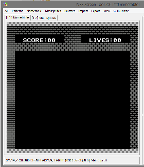
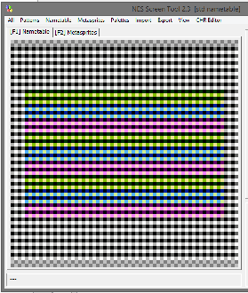
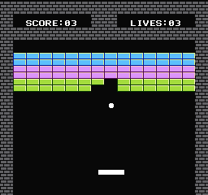

10、游戏循环
我们来谈谈游戏循环
游戏需要循环，while(1){}
循环里的第一项是ppu_wait_nmi()，他会等待新一帧的开始触发nmi，每秒60帧（欧版是50帧）
但是，如果游戏的逻辑太过复杂将会耗费更多的时间，并且超过了nmi触发的开始，那么等到了ppu_wait_nmi()之后，他会等待下一帧，这样会让游戏变得很慢。
好在现在还没发生过这种情况，因为我们的代码太短了，但是后面做的游戏中就不那么简单了，所以还是要注意代码的简洁。
控制器使用了
pad_poll(0)
get_pad_new(0)
然后要说的是clear_vram_buffer()，这些代码对我来说是对一无二的。由于nmi的作用，我们需要重写他，以便让他能实现更多功能
score_lives_draw() 使用one_vram_buffer() 重新显示屏幕顶端的计分板。
这些类似vram_put()，但他们将被放在缓冲区中，并且nmi代码将在v-blank期间自动将它们推送到ppu。
然后是游戏的逻辑，移动球拍，移动球，检查是否有碰撞。
移动手柄
if(pad1 & PAD_LEFT){
Paddle.X -= 2;
if(Paddle.X < PADDLE_MIN) Paddle.X = PADDLE_MIN;
}
if(pad1 & PAD_RIGHT){
Paddle.X += 2;
if(Paddle.X > PADDLE_MAX) Paddle.X = PADDLE_MAX;
}
移动球，如果他是移动的
if(ball_direction == GOING_UP){
Ball.Y -= 3;
if(Ball.Y < MAX_UP){
ball_direction = GOING_DOWN;
}
}
else { // going down
Ball.Y += 3;
if(Ball.Y > MAX_DOWN){
--lives01;
ball_state = BALL_OFF;
}
}
然后到了绘制精灵，首先先要清除旧的，然后重新绘制所有活动的精灵。
如果一个块被球命中，hit_block()，从碰撞图中删除这个块，用一个空白块填充这个区域。
同样，我使用vram缓冲区暂时存储它，并在v-blank期间自动将其发送到PPU。
通常情况下，我会使用很多个
game_states：比如标题，游戏，暂停，结束。
我使用不同的 ball_states：飞出屏幕BALL_OFF，准备发射球BALL_STUCK (卡在平板边缘)，球在移动BALL_ACTIVE
我使用NES Screen Tool制作背景，在c1.csv中定义了可以破坏的图块。我没用Tiled工具，因为他显示容易，但是如果有修改对应的可破坏的图块布局也需要跟着修改（也就是前面的c1.csv）
const unsigned char c1 [] = {
0,0,0,0,0,0,0,0,0,0,0,0,0,0,0,0，
0,0,0,0,0,0,0,0,0,0,0,0,0,0,0,0，
0,1,1,1,1,1,1,1,1,1,1,1,1,1,1,0，
0,1,1,1,1,1,1,1,1,1,1,1,1,1,1,0，
0,1,1,1,1,1,1,1,1,1,1,1,1,1,1,0，
0,1,1,1,1,1,1,1,1,1,1,1,1,1,1,0，
0,1,1,1,1,1,1,1,1,1,1,1,1,1,1,0，
0,1,1,1,1,1,1,1,1,1,1,1,1,1,1,0，
0,0,0,0,0,0,0,0,0,0,0,0,0,0,0,0，
0,0,0,0,0,0,0,0,0,0,0,0,0,0,0,0，
0,0,0,0,0,0,0,0,0,0,0,0,0,0,0,0，
0,0,0,0,0,0,0,0,0,0,0,0,0,0,0,0，
0,0,0,0,0,0,0,0,0,0,0,0,0,0,0,0，
0,0,0,0,0,0,0,0,0,0,0,0,0,0,0,0，
0,0,0,0,0,0,0,0,0,0,0,0,0,0,0,0，
0,0,0,0,0,0,0,0,0,0,0,0,0,0,0,0
};
使用灰色的砖块在NES Screen Tool中画图，然后压缩导出RLE文件。

我在NES Screen Tool中预先更改了属性表，然后保存背景。这就是瓷砖的颜色，它们是不同的调色板。但他们都使用相同的瓷砖。这是属性检查器视图（按“A”）。

每帧都会更新记分牌，请注意我将得分的每个数字都保存为单独的变量（等级为0-9）
score10是10位数，score01是个位数。由于6502处理器缺少内置数学运算，因此除法和模数对NES的操作非常慢，因此保持每个数字分开可加快代码速度。

https://github.com/nesdoug/12_Break
现在把这个变成游戏已经很简单了，但是横向移动需要写很复杂的代码，我会把示例写的尽可能简单。